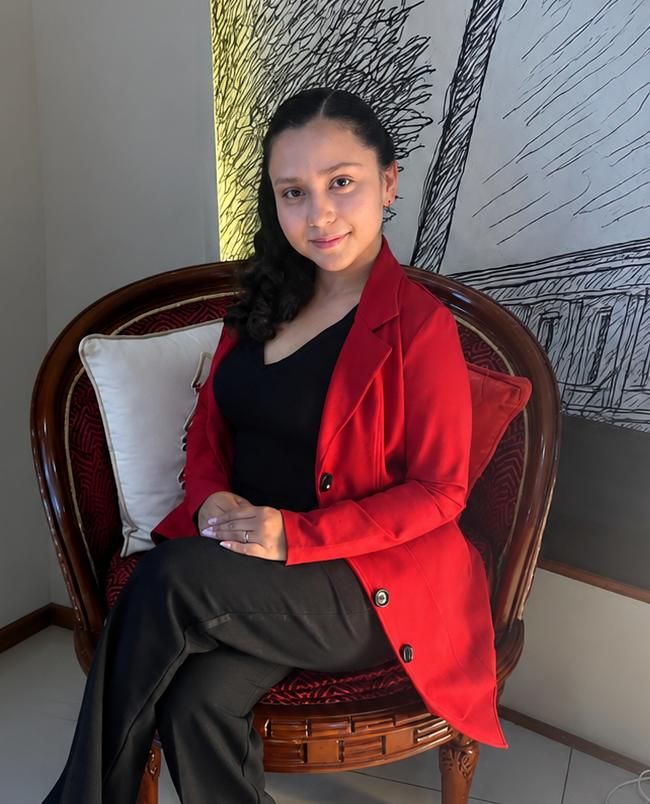

Josué Alegría
Director GeneralEncargado de la articulación estratégica de proyectos, desarrollo organizacional y coordinación territorial con los sectores juveniles de Imbabura.
Conoce al equipo directivo que lidera el compromiso, la equidad social y el empoderamiento juvenil en la provincia de Imbabura.
Encargado de la articulación estratégica de proyectos, desarrollo organizacional y coordinación territorial con los sectores juveniles de Imbabura.

Líder ejecutiva de la Presidencia Juvenil Imbabura, encargada de la dirección estratégica, representación institucional y gestión de proyectos sociales en la provincia.
Coordinador de actividades operativas, enlaces interinstitucionales y fortalecimiento de iniciativas sociales comunitarias.